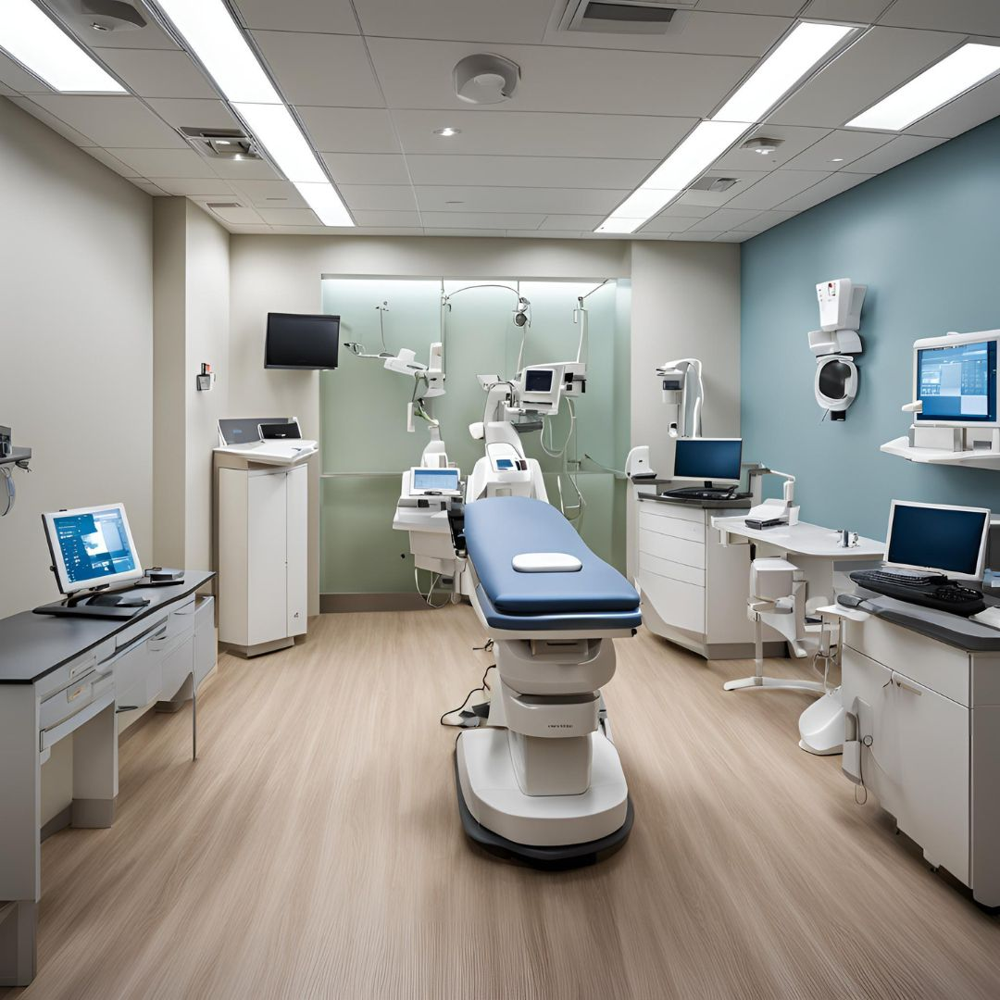
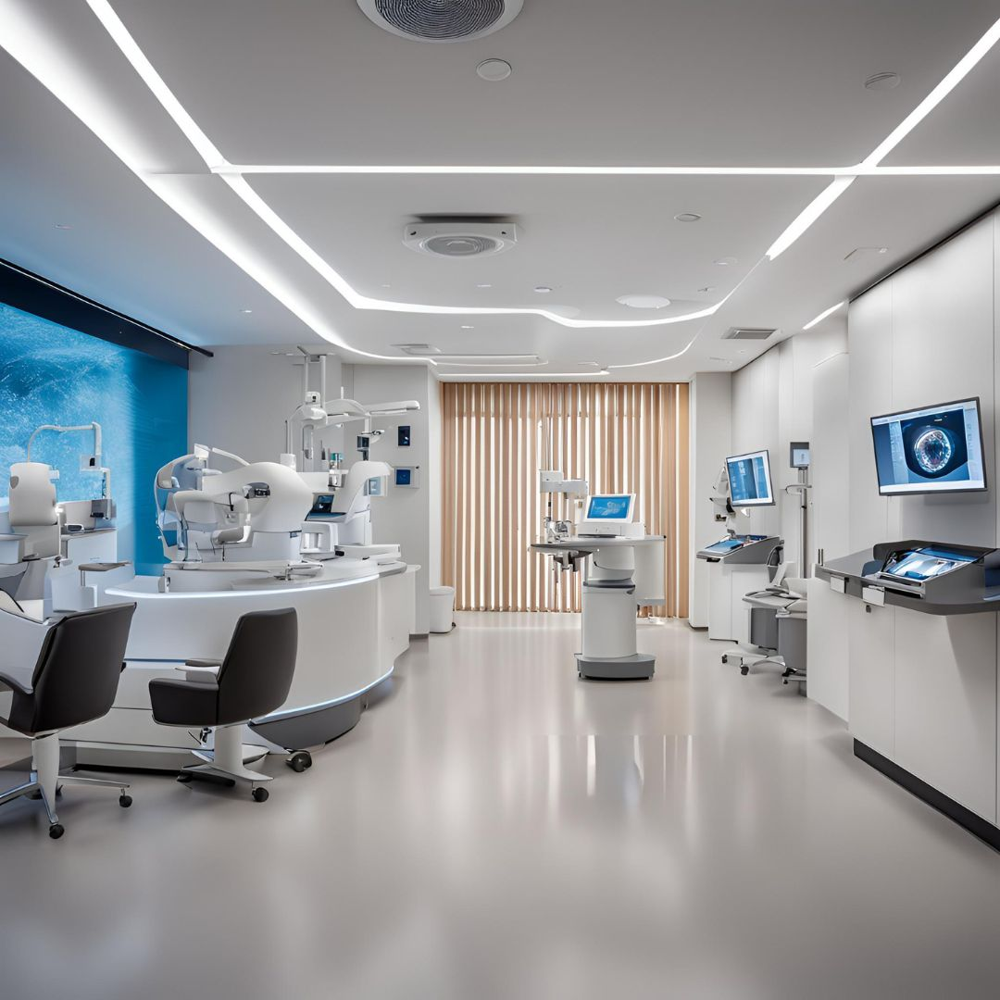
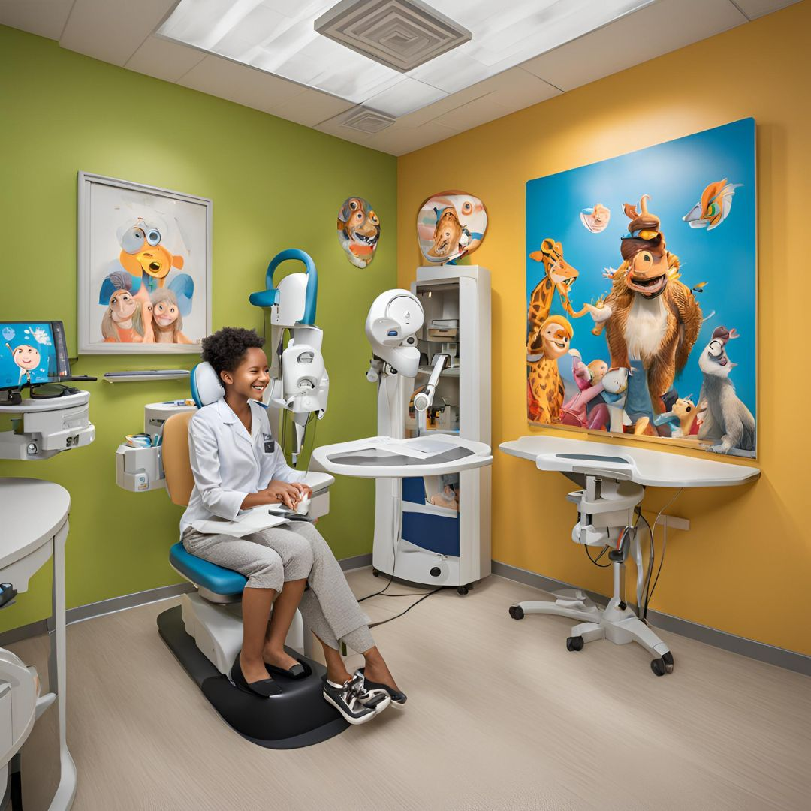

State-of-the-art eye care facilities and specialist supervision
Our Department of Ophthalmology provides comprehensive eye care services using the latest technology and evidence-based methods. From routine eye examinations to complex surgeries, our team of specialists ensures that all patients receive the best eye care and vision possible.
Complete assessment of vision and eye health
Modern refractive surgery and lens options
Advanced imaging and diagnostic facilities

State-of-the-art laser eye surgery

Specialized retina care

Specialized care for young patients
Head of Ophthalmology
Specializes in LASIK and refractive surgery
Retina Specialist
Specializes in retinal diseases and surgery
Pediatric Ophthalmologist
Specializes in children's eye care
Monday - Friday: 8:00 AM - 5:00 PM
Saturday: 9:00 AM - 1:00 PM
Appointments: (555) 123-4567
Emergency: (555) 987-6543
Eye Care Center, Third Floor
Medical Center Campus
Educational materials about common eye conditions and treatments
Important information for preparing for eye surgery
Practical advice for maintaining healthy vision